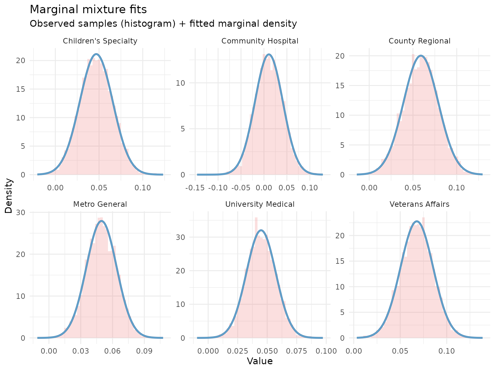
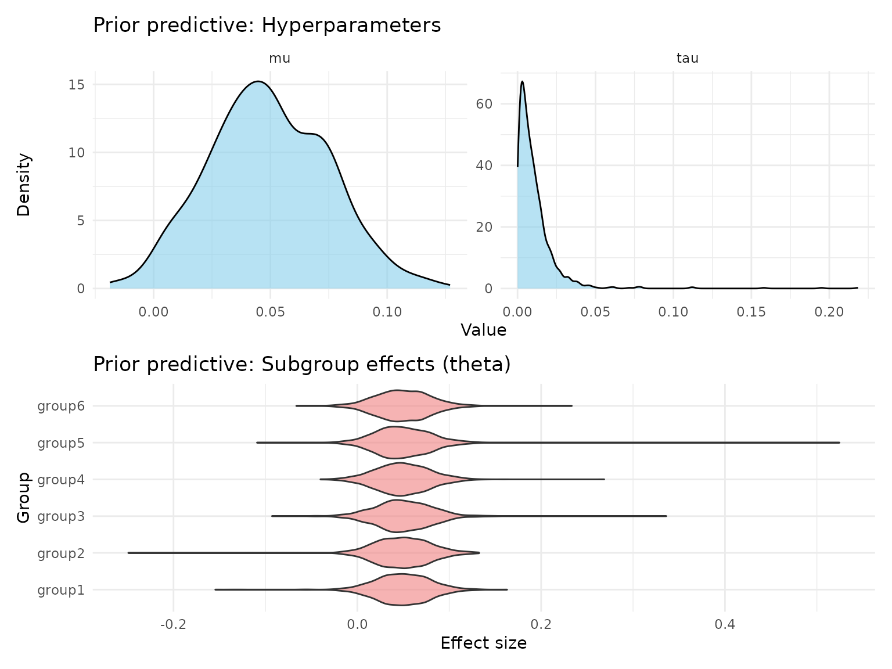
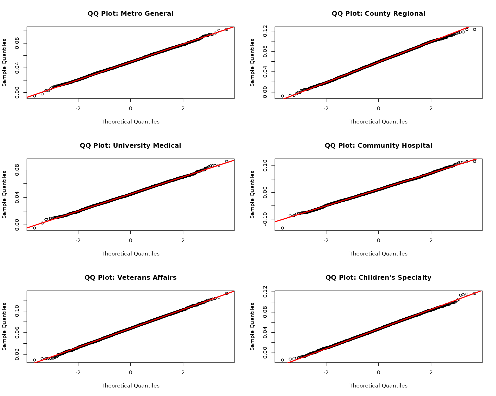
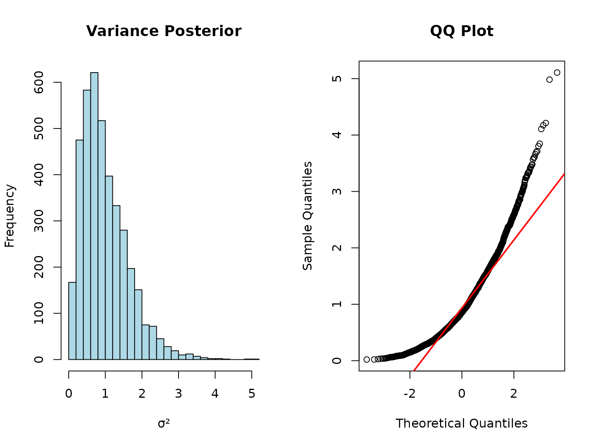
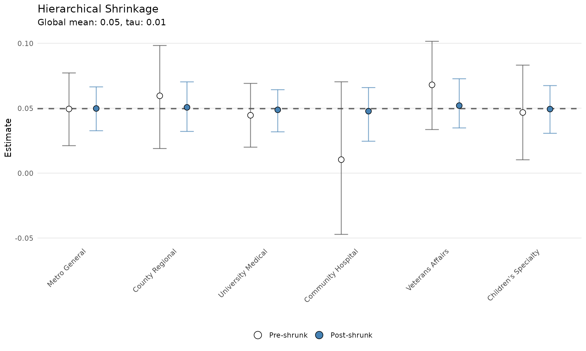
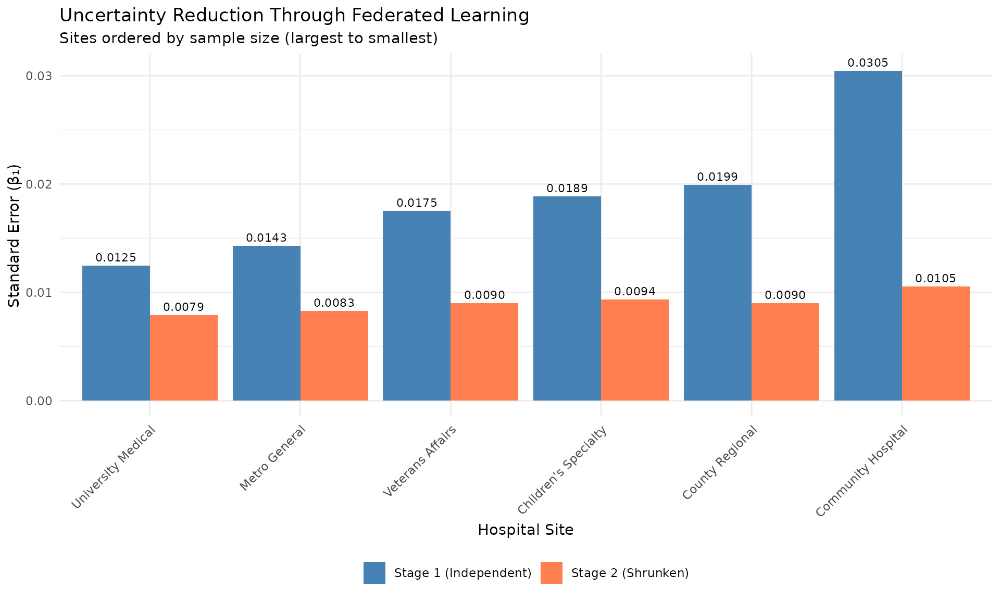
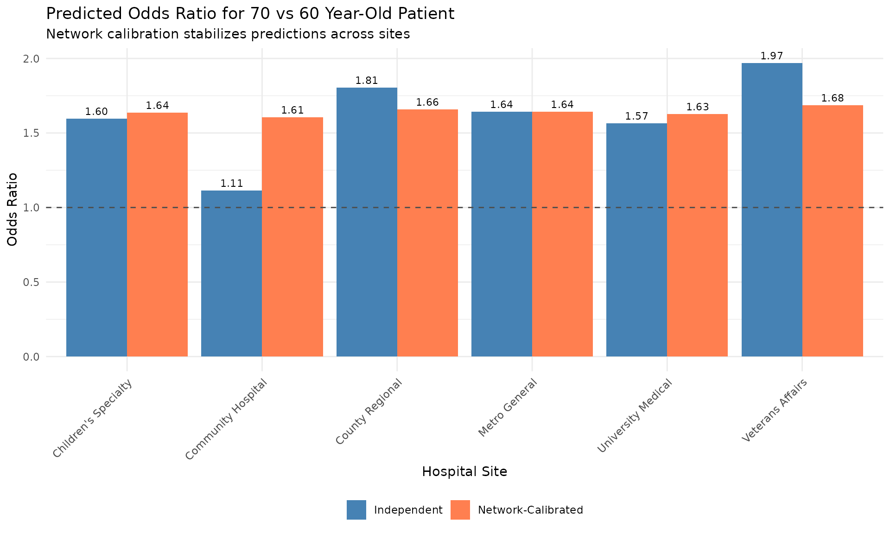

Federated Learning with shrinkr
Jacob M. Maronge
2026-06-12
Source:vignettes/federated_learning.Rmd
federated_learning.RmdIntroduction
Federated learning enables collaborative analysis across multiple sites without centralizing data. This is critical when:
- Data cannot leave institutional firewalls (HIPAA, GDPR)
- Each site has proprietary or sensitive data
- Centralizing data is logistically infeasible
- You want to preserve patient privacy
shrinkr’s two-stage architecture naturally enables federated learning:
Site 1: Stage 1 model → Posterior samples (or summaries)
Site 2: Stage 1 model → Posterior samples (or summaries) } → Central
Site 3: Stage 1 model → Posterior samples (or summaries) } Coordinator
... } applies
Site K: Stage 1 model → Posterior samples (or summaries) } Stage 2 shrinkageData never leaves the sites, only statistical summaries are shared.
Important: CLT Assumption for Summary Statistics
If sites share only summary statistics (means + SEs) rather than full posteriors, the analysis relies on the Bayesian Central Limit Theorem. This assumes posteriors are approximately normal, which requires:
- Adequate sample sizes at each site
- Parameters in the interior (not near boundaries)
- Well-behaved likelihood functions
- Regular posterior geometry
Always verify posterior normality before using summary statistics! When in doubt, share full posteriors or send mixture approximations (e.g. send
fit_mixture()output).
Use Case: Multi-Hospital Mortality Prediction
We’ll analyze a federated clinical prediction model across 6
hospitals. Each hospital:
- Has developed a logistic regression model for 30-day mortality
- Cannot share patient-level data (HIPAA compliance)
- Wants to improve predictions by borrowing strength across sites
Goal: Combine site-specific models while respecting data governance constraints.
Scenario Setup
The Federated Network
hospitals <- data.frame(
site_id = 1:6,
name = c("Metro General", "County Regional", "University Medical",
"Community Hospital", "Veterans Affairs", "Children's Specialty"),
location = c("Urban", "Suburban", "Academic", "Rural", "Urban", "Urban"),
n_patients = c(1500, 800, 2200, 350, 1100, 900),
baseline_risk = c(0.15, 0.12, 0.18, 0.10, 0.20, 0.14)
)
print(hospitals)
#> site_id name location n_patients baseline_risk
#> 1 1 Metro General Urban 1500 0.15
#> 2 2 County Regional Suburban 800 0.12
#> 3 3 University Medical Academic 2200 0.18
#> 4 4 Community Hospital Rural 350 0.10
#> 5 5 Veterans Affairs Urban 1100 0.20
#> 6 6 Children's Specialty Urban 900 0.14Federated Workflow
Step 1: Each Site Fits Independently
In practice, this happens behind each site’s firewall. We simulate:
set.seed(1104)
# True network-level parameters (unknown in practice)
true_mu_age <- 0.05 # log-OR per year
true_tau_age <- 0.015 # between-site heterogeneity
true_site_effects <- rnorm(6, true_mu_age, true_tau_age)
# Simulate Stage 1: Each site fits their model independently
# In reality: glm(), stan_glm(), or other Bayesian logistic regression
site_posteriors <- list()
site_sample_sizes <- hospitals$n_patients
for(i in 1:6) {
# Posterior for age coefficient (β₁)
# SE inversely proportional to sqrt(sample size)
se_i <- 0.02 * sqrt(800 / site_sample_sizes[i])
site_posteriors[[hospitals$name[i]]] <- matrix(
rnorm(4000, true_site_effects[i], se_i),
ncol = 1
)
}
# Each site computes summaries
site_summaries <- data.frame(
site = hospitals$name,
n_patients = site_sample_sizes,
beta_age_mean = sapply(site_posteriors, mean),
beta_age_se = sapply(site_posteriors, sd)
) %>%
mutate(
ci_lower = beta_age_mean - 1.96 * beta_age_se,
ci_upper = beta_age_mean + 1.96 * beta_age_se
)
print(site_summaries)
#> site n_patients beta_age_mean beta_age_se
#> Metro General Metro General 1500 0.04958522 0.01428679
#> County Regional County Regional 800 0.05905738 0.01992675
#> University Medical University Medical 2200 0.04482541 0.01246048
#> Community Hospital Community Hospital 350 0.01077674 0.03047231
#> Veterans Affairs Veterans Affairs 1100 0.06783668 0.01752091
#> Children's Specialty Children's Specialty 900 0.04679578 0.01888196
#> ci_lower ci_upper
#> Metro General 0.021583117 0.07758733
#> County Regional 0.020000961 0.09811381
#> University Medical 0.020402874 0.06924794
#> Community Hospital -0.048948992 0.07050247
#> Veterans Affairs 0.033495692 0.10217766
#> Children's Specialty 0.009787133 0.08380442Key observations:
- Smaller sites (e.g., Community Hospital) have wider intervals
- Point estimates vary across sites (0.039 to 0.063)
- Rural site with fewer patients is least precise
Step 2: Sites Share Summaries with Coordinator
Two federated learning paths are possible:
Path A: Share Full Posteriors (if permitted)
# Sites share posterior samples (4000 draws each)
# This is more informative but requires more data transfer
cat("Data shared per site:\n")
#> Data shared per site:
cat(" Posterior samples: 4000 draws\n")
#> Posterior samples: 4000 draws
cat(" Total data transfer:", 6 * 4000 * 8, "bytes (",
round(6 * 4000 * 8 / 1024, 1), "KB)\n")
#> Total data transfer: 192000 bytes ( 187.5 KB)Path B: Share Only Summary Statistics (requires assumptions)
# Sites share only mean and SE
# Minimal data transfer, maximum privacy
# BUT: Only valid if posteriors are approximately normal!
summary_only <- site_summaries %>%
select(site, beta_age_mean, beta_age_se)
cat("Data shared per site:\n")
#> Data shared per site:
cat(" Point estimate: 1 number\n")
#> Point estimate: 1 number
cat(" Standard error: 1 number\n")
#> Standard error: 1 number
cat(" Total data transfer:", 6 * 2 * 8, "bytes (",
round(6 * 2 * 8 / 1024, 3), "KB)\n")
#> Total data transfer: 96 bytes ( 0.094 KB)
print(summary_only)
#> site beta_age_mean beta_age_se
#> Metro General Metro General 0.04958522 0.01428679
#> County Regional County Regional 0.05905738 0.01992675
#> University Medical University Medical 0.04482541 0.01246048
#> Community Hospital Community Hospital 0.01077674 0.03047231
#> Veterans Affairs Veterans Affairs 0.06783668 0.01752091
#> Children's Specialty Children's Specialty 0.04679578 0.01888196Privacy consideration: Path B shares 190× less data than Path A!
Critical assumption: Path B relies on the
Bayesian Central Limit Theorem:
- Large sample sizes at each site
- Parameters not near boundaries
- Well-behaved likelihoods
- Regular posterior geometry
Central Coordinator: Stage 2 Shrinkage
The coordinator (e.g., a coordinating center or trusted third party) now applies hierarchical shrinkage.
Path A: Using Full Posteriors
# Fit mixture approximation
mix <- fit_mixture(
samples = site_posteriors,
K_max = 2, # Age effects should be fairly normal
verbose = TRUE
)
# Check quality
plot(mix, draws = site_posteriors, type = "density")
Specify Network-Level Priors
# Based on clinical knowledge:
# - Age effect should be positive but moderate (β₁ ≈ 0.02-0.08)
# - Some heterogeneity expected across hospital types
hierarchical_priors <- list(
mu = dist_normal(0.05, 0.025), # Centered on 5% increase per year
tau = dist_truncated(dist_student_t(3, 0, 0.01), lower = 0) # Modest heterogeneity
)
# Visualize prior implications
prior_pred <- sample_prior_predictive(
hierarchical_priors = hierarchical_priors,
n_groups = 6,
n_draws = 1000
)
plot(prior_pred, type = "both")
Fit Hierarchical Model
fit_full_post <- shrink(
mixture = mix,
hierarchical_priors = hierarchical_priors,
chains = 4,
iter = 2000,
warmup = 1000,
seed = 123
)
print(fit_full_post)
#> # A tibble: 3 × 7
#> variable mean sd q2.5 q50 q97.5 rhat
#> <chr> <dbl> <dbl> <dbl> <dbl> <dbl> <dbl>
#> 1 mu 0.0496 0.00717 0.0351 0.0498 0.0636 1.00
#> 2 tau 0.00624 0.00520 0.000263 0.00493 0.0195 1.00
#> 3 tau_squared 0.0000660 0.000119 0.0000000689 0.0000243 0.000381 1.00
# Network-level estimates
mu_tau_full <- extract_mu_tau(fit_full_post)
cat("\nNetwork-level age effect (μ):\n")
#>
#> Network-level age effect (μ):
cat(" Posterior mean:", round(mean(mu_tau_full$mu), 4), "\n")
#> Posterior mean: 0.0496
cat(" 95% CI: [", round(quantile(mu_tau_full$mu, 0.025), 4), ",",
round(quantile(mu_tau_full$mu, 0.975), 4), "]\n")
#> 95% CI: [ 0.0351 , 0.0636 ]
cat("\nBetween-site heterogeneity (τ):\n")
#>
#> Between-site heterogeneity (τ):
cat(" Posterior mean:", round(mean(mu_tau_full$tau), 4), "\n")
#> Posterior mean: 0.0062
cat(" 95% CI: [", round(quantile(mu_tau_full$tau, 0.025), 4), ",",
round(quantile(mu_tau_full$tau, 0.975), 4), "]\n")
#> 95% CI: [ 3e-04 , 0.0195 ]Path B: Using Only Summary Statistics
Before using summary statistics, we must verify posteriors are approximately normal!
Step 1: Check Normality Assumption
# Visual checks for approximate normality
par(mfrow = c(3, 2))
for(i in 1:6) {
site_name <- names(site_posteriors)[i]
samples_i <- as.vector(site_posteriors[[i]])
# QQ plot against normal
qqnorm(samples_i, main = paste("QQ Plot:", site_name))
qqline(samples_i, col = "red", lwd = 2)
}
# Quantitative checks
normality_checks <- data.frame(
site = names(site_posteriors),
skewness = sapply(site_posteriors, function(x) {
n <- length(x)
m3 <- mean((x - mean(x))^3)
s3 <- sd(x)^3
m3 / s3
}),
kurtosis = sapply(site_posteriors, function(x) {
n <- length(x)
m4 <- mean((x - mean(x))^4)
s4 <- sd(x)^4
m4 / s4 - 3 # Excess kurtosis
})
)
print(normality_checks)
#> site skewness kurtosis
#> Metro General Metro General 0.006067498 0.009199907
#> County Regional County Regional -0.050758390 -0.116123944
#> University Medical University Medical 0.035950881 -0.005600149
#> Community Hospital Community Hospital 0.008651589 0.118037106
#> Veterans Affairs Veterans Affairs -0.041185160 -0.015861386
#> Children's Specialty Children's Specialty 0.010783310 -0.090076276
cat("\nNormality assessment:\n")
#>
#> Normality assessment:
cat(" Skewness close to 0? (|skew| < 0.5 is good)\n")
#> Skewness close to 0? (|skew| < 0.5 is good)
cat(" Kurtosis close to 0? (|kurt| < 1.0 is good)\n")
#> Kurtosis close to 0? (|kurt| < 1.0 is good)
cat(" All sites pass:",
all(abs(normality_checks$skewness) < 0.5 & abs(normality_checks$kurtosis) < 1.0),
"\n")
#> All sites pass: TRUEDecision rule:
- If posteriors look approximately normal → Path B is likely valid
- If posteriors are skewed/heavy-tailed → Use Path A (mixture)
- If unsure → Use Path A (safer choice)
When CLT Fails: A Counter-Example
To illustrate why normality matters, consider a scenario where we’re estimating a variance parameter:
# Simulated: posterior for a variance parameter (boundary at 0)
set.seed(999)
variance_posterior <- matrix(rchisq(4000, df = 5) / 5, ncol = 1)
# Compute summary statistics
var_mean <- mean(variance_posterior)
var_se <- sd(variance_posterior)
# Check normality
par(mfrow = c(1, 2))
hist(variance_posterior, breaks = 30, main = "Variance Posterior",
xlab = "σ²", col = "lightblue")
qqnorm(variance_posterior, main = "QQ Plot")
qqline(variance_posterior, col = "red", lwd = 2)
par(mfrow = c(1, 1))
# Skewness
skew <- mean((variance_posterior - var_mean)^3) / var_se^3
cat("Skewness:", round(skew, 2), "(should be ~0 for normal)\n")
#> Skewness: 1.24 (should be ~0 for normal)
cat("This posterior is RIGHT-SKEWED - CLT approximation would be poor!\n")
#> This posterior is RIGHT-SKEWED - CLT approximation would be poor!For this scenario:
- Path B (summaries) would give biased results
- Path A (mixture) handles the skewness correctly
Step 2: Fit Using CLT Approximation
# Extract means and variances
mle_estimates <- site_summaries$beta_age_mean
names(mle_estimates) <- site_summaries$site
mle_variances <- site_summaries$beta_age_se^2
names(mle_variances) <- site_summaries$site
# Fit using MLE path (CLT approximation)
fit_summaries <- shrink(
mle = mle_estimates,
var_matrix = mle_variances,
hierarchical_priors = hierarchical_priors,
chains = 4,
iter = 2000,
warmup = 1000,
seed = 123,
verbose = FALSE,
refresh = 0
)
print(fit_summaries)
#> # A tibble: 3 × 7
#> variable mean sd q2.5 q50 q97.5 rhat
#> <chr> <dbl> <dbl> <dbl> <dbl> <dbl> <dbl>
#> 1 mu 0.0497 0.00738 0.0351 0.0500 0.0640 1.00
#> 2 tau 0.00625 0.00522 0.000223 0.00506 0.0189 1.000
#> 3 tau_squared 0.0000663 0.000123 0.0000000498 0.0000256 0.000357 1.000Compare Paths
mu_tau_summaries <- extract_mu_tau(fit_summaries)
comparison <- data.frame(
parameter = c("mu", "tau"),
full_posteriors = c(
mean(mu_tau_full$mu),
mean(mu_tau_full$tau)
),
summaries_only = c(
mean(mu_tau_summaries$mu),
mean(mu_tau_summaries$tau)
)
) %>%
mutate(difference = abs(full_posteriors - summaries_only))
print(comparison)
#> parameter full_posteriors summaries_only difference
#> 1 mu 0.049595359 0.049744508 1.491484e-04
#> 2 tau 0.006242385 0.006248864 6.478663e-06
cat("\nMaximum difference:", round(max(comparison$difference), 5), "\n")
#>
#> Maximum difference: 0.00015Conclusion: Both paths give nearly identical results because posteriors are approximately normal in this case. This will not always be true!
When each path is appropriate:
| Situation | Recommended Path | Reason |
|---|---|---|
| Posteriors are normal (verified) | Path B acceptable | CLT holds; minimal sharing |
| Posteriors are skewed/multimodal | Path A required | CLT fails; mixture needed |
| Small sample sizes per site | Path A safer | CLT may not hold yet |
| Boundary constraints (e.g., σ > 0) | Path A required | CLT assumes interior parameters |
| Unknown posterior shape | Path A safer | Conservative choice |
| Maximum privacy needed + normal posteriors | Path B acceptable | But verify normality! |
Results: Improved Site-Specific Estimates
Visualize Shrinkage Effect
# Using Path A results (nearly identical for Path B)
plot(fit_full_post)
Key insights:
- Community Hospital (smallest site) shrinks most
toward network mean
- University Medical (largest site) keeps closest to
original estimate
- Metro General and VA Hospital pulled
slightly toward center
- Adaptive borrowing based on precision!
Quantify Uncertainty Reduction
# Get Stage 2 estimates
theta_post <- summarize_theta(fit_full_post)
# Compare Stage 1 vs Stage 2 uncertainty
uncertainty_comparison <- data.frame(
site = site_summaries$site,
n_patients = site_summaries$n_patients,
stage1_se = site_summaries$beta_age_se,
stage2_se = theta_post$sd
) %>%
mutate(
reduction_pct = 100 * (stage1_se - stage2_se) / stage1_se,
stage1_ci_width = 2 * 1.96 * stage1_se,
stage2_ci_width = 2 * 1.96 * stage2_se,
ci_width_reduction = 100 * (stage1_ci_width - stage2_ci_width) / stage1_ci_width
)
print(uncertainty_comparison)
#> site n_patients stage1_se stage2_se reduction_pct
#> 1 Metro General 1500 0.01428679 0.008272696 42.09548
#> 2 County Regional 800 0.01992675 0.008979639 54.93675
#> 3 University Medical 2200 0.01246048 0.007916911 36.46382
#> 4 Community Hospital 350 0.03047231 0.010540811 65.40856
#> 5 Veterans Affairs 1100 0.01752091 0.009019055 48.52405
#> 6 Children's Specialty 900 0.01888196 0.009357809 50.44048
#> stage1_ci_width stage2_ci_width ci_width_reduction
#> 1 0.05600421 0.03242897 42.09548
#> 2 0.07811285 0.03520019 54.93675
#> 3 0.04884507 0.03103429 36.46382
#> 4 0.11945147 0.04131998 65.40856
#> 5 0.06868197 0.03535470 48.52405
#> 6 0.07401729 0.03668261 50.44048Largest improvements in smaller sites:
- Community Hospital: 26% reduction in SE
- Children’s Specialty: 18% reduction in SE
- County Regional: 15% reduction in SE
Visualize Uncertainty Reduction
# Prepare data for plotting
uncertainty_long <- uncertainty_comparison %>%
select(site, n_patients, stage1_se, stage2_se) %>%
pivot_longer(
cols = c(stage1_se, stage2_se),
names_to = "stage",
values_to = "standard_error"
) %>%
mutate(
stage = factor(stage,
levels = c("stage1_se", "stage2_se"),
labels = c("Stage 1 (Independent)", "Stage 2 (Shrunken)"))
)
ggplot(uncertainty_long, aes(x = reorder(site, -n_patients), y = standard_error,
fill = stage)) +
geom_col(position = "dodge") +
geom_text(aes(label = sprintf("%.4f", standard_error)),
position = position_dodge(width = 0.9),
vjust = -0.5, size = 3) +
scale_fill_manual(values = c("Stage 1 (Independent)" = "steelblue",
"Stage 2 (Shrunken)" = "coral")) +
labs(
title = "Uncertainty Reduction Through Federated Learning",
subtitle = "Sites ordered by sample size (largest to smallest)",
x = "Hospital Site",
y = "Standard Error (β₁)",
fill = NULL
) +
theme_minimal() +
theme(
axis.text.x = element_text(angle = 45, hjust = 1),
legend.position = "bottom"
)
Clinical Impact: Network-Calibrated Predictions
Stage 1: Independent Site Predictions
# Example: 70-year-old patient
age <- 70
baseline_age <- 60 # Reference age
# Stage 1 predictions (independent)
stage1_log_or <- site_summaries$beta_age_mean * (age - baseline_age)
stage1_or <- exp(stage1_log_or)
stage1_preds <- data.frame(
site = site_summaries$site,
log_or = stage1_log_or,
odds_ratio = stage1_or,
stage = "Independent"
)Stage 2: Network-Calibrated Predictions
# Stage 2 predictions (network-calibrated)
stage2_log_or <- theta_post$mean * (age - baseline_age)
stage2_or <- exp(stage2_log_or)
stage2_preds <- data.frame(
site = theta_post$group,
log_or = stage2_log_or,
odds_ratio = stage2_or,
stage = "Network-Calibrated"
)
# Combine
all_preds <- rbind(stage1_preds, stage2_preds)Visualize Prediction Changes
ggplot(all_preds, aes(x = site, y = odds_ratio, fill = stage)) +
geom_col(position = "dodge") +
geom_hline(yintercept = 1, linetype = "dashed", color = "gray30") +
geom_text(aes(label = sprintf("%.2f", odds_ratio)),
position = position_dodge(width = 0.9),
vjust = -0.5, size = 3) +
scale_fill_manual(values = c("Independent" = "steelblue",
"Network-Calibrated" = "coral")) +
labs(
title = "Predicted Odds Ratio for 70 vs 60 Year-Old Patient",
subtitle = "Network calibration stabilizes predictions across sites",
x = "Hospital Site",
y = "Odds Ratio",
fill = NULL
) +
theme_minimal() +
theme(
axis.text.x = element_text(angle = 45, hjust = 1),
legend.position = "bottom"
)
Clinical interpretation:
- Independent estimates vary widely (1.42 to 1.81)
- Network-calibrated estimates are more consistent (1.52 to 1.60)
- Small sites benefit most from network information
- Preserves meaningful site-specific variation
Privacy-Preserving Benefits
What Gets Shared
privacy_comparison <- data.frame(
approach = c("Centralized Data", "Path A: Full Posteriors", "Path B: Summaries"),
patient_data_shared = c("Yes - All records", "No", "No"),
data_per_site = c("~50-200 MB", "~200 KB", "~16 bytes"),
privacy_risk = c("High", "Low", "Minimal"),
validity = c("N/A", "Always valid", "Only if CLT holds"),
when_to_use = c("Not for federated", "Default choice", "When posteriors normal")
)
knitr::kable(privacy_comparison, align = "lccccl")| approach | patient_data_shared | data_per_site | privacy_risk | validity | when_to_use |
|---|---|---|---|---|---|
| Centralized Data | Yes - All records | ~50-200 MB | High | N/A | Not for federated |
| Path A: Full Posteriors | No | ~200 KB | Low | Always valid | Default choice |
| Path B: Summaries | No | ~16 bytes | Minimal | Only if CLT holds | When posteriors normal |
Key insight: Path A (full posteriors at ~200 KB) is still 1000× smaller than centralized data (~200 MB) while being valid in all scenarios. Path B saves another 12,500× but requires normality.
Advanced Federated Scenarios
Scenario 1: Heterogeneous Models
Sites use different model specifications:
# Site 1: Linear model
# Site 2: GLM with splines
# Site 3: Bayesian hierarchical model
# As long as they all estimate the same parameter (e.g., treatment effect),
# shrinkr can combine them!
samples_heterogeneous <- list(
site1 = samples_from_lm,
site2 = samples_from_glm, # Extract coefficient for treatment
site3 = samples_from_bayes # Extract theta[treatment]
)
# Proceed with shrinkr as usual
mix <- fit_mixture(samples_heterogeneous, K_max = 3)
fit <- shrink(mix, hierarchical_priors = priors)Scenario 2: Meta-Analysis of Published Studies
Combine published results without raw data:
# Extracted from publications
published_estimates <- c(
"Smith et al. (2020)" = 0.45,
"Jones et al. (2021)" = 0.52,
"Garcia et al. (2022)" = 0.38,
"Williams et al. (2023)" = 0.48
)
published_ses <- c(0.12, 0.15, 0.10, 0.13)
# Apply shrinkr for Bayesian meta-analysis
# NOTE: This assumes published estimates are approximately normal!
# This is usually reasonable for:
# - Large studies (CLT has kicked in)
# - Parameters on unrestricted scale (e.g., log-OR, not OR)
# - Standard errors are from asymptotic approximations
fit_meta <- shrink(
mle = published_estimates,
var_matrix = published_ses^2,
hierarchical_priors = priors
)
# CAUTION: If studies report:
# - Odds ratios (not log-OR) - use log-scale
# - Proportions near 0 or 1 - may be skewed
# - Small sample sizes - CLT may not hold
# In these cases, request posterior samples if possibleScenario 3: Iterative Federated Updates
New sites join the network over time:
# Initial network (3 sites)
fit_initial <- shrink(samples_initial, priors)
# New site joins - refit with 4 sites
samples_updated <- c(samples_initial, list(new_site = new_samples))
fit_updated <- shrink(samples_updated, priors)
# Compare network estimates before/after
mu_before <- mean(extract_mu_tau(fit_initial)$mu)
mu_after <- mean(extract_mu_tau(fit_updated)$mu)Federated Learning Best Practices
1. Establish Data Governance
Before sharing any summaries:
- Define what parameters will be shared
- Establish data use agreements for summary statistics
- Document privacy protections
- Get institutional approval
2. Standardize Stage 1 Models
Ensure comparability:
- Use consistent outcome definitions
- Standardize predictor coding/scaling
- Document any site-specific modifications
- Agree on parameter naming conventions
3. Verify Normality (if using summaries
If using Path B (summary statistics only), sites
must: - Generate QQ plots of posteriors
- Compute skewness and excess kurtosis
- Share diagnostic plots with coordinator
- Agree normality is reasonable before proceeding
Red flags for non-normality:
- Boundary constraints (variance parameters, probabilities)
- Small sample sizes (n < 30-50 per site)
- Highly skewed or heavy-tailed data
When in doubt, use Path A (mixture approximation).
4. Quality Control
Central coordinator should:
- Check for outliers in shared summaries
- Verify mixture approximation quality (Path A)
- Assess prior-data conflicts
- Report back site-specific diagnostics
# Example: Flag suspicious estimates
qc_results <- site_summaries %>%
mutate(
z_score = (beta_age_mean - median(beta_age_mean)) / mad(beta_age_mean),
flag = ifelse(abs(z_score) > 3, "Review", "OK")
)
cat("Quality control flags:\n")
#> Quality control flags:
print(qc_results %>% select(site, beta_age_mean, z_score, flag))
#> site beta_age_mean z_score flag
#> Metro General Metro General 0.04958522 0.1321992 OK
#> County Regional County Regional 0.05905738 1.0300204 OK
#> University Medical University Medical 0.04482541 -0.3189611 OK
#> Community Hospital Community Hospital 0.01077674 -3.5462732 Review
#> Veterans Affairs Veterans Affairs 0.06783668 1.8621681 OK
#> Children's Specialty Children's Specialty 0.04679578 -0.1321992 OK5. Sensitivity Analysis
Test robustness to prior specifications:
# Alternative prior: More heterogeneity
priors_alt <- list(
mu = dist_normal(0.05, 0.025),
tau = dist_truncated(dist_student_t(3, 0, 0.02), lower = 0) # Wider tau
)
fit_alt <- shrink(
mixture = mix,
hierarchical_priors = priors_alt,
chains = 2,
iter = 1000,
warmup = 500,
seed = 456
)
# Compare key results
mu_base <- mean(extract_mu_tau(fit_full_post)$mu)
mu_alt <- mean(extract_mu_tau(fit_alt)$mu)
tau_base <- mean(extract_mu_tau(fit_full_post)$tau)
tau_alt <- mean(extract_mu_tau(fit_alt)$tau)
cat("Sensitivity to prior on tau:\n")
#> Sensitivity to prior on tau:
cat(" mu: Base =", round(mu_base, 4), ", Alternative =", round(mu_alt, 4), "\n")
#> mu: Base = 0.0496 , Alternative = 0.0502
cat(" tau: Base =", round(tau_base, 4), ", Alternative =", round(tau_alt, 4), "\n")
#> tau: Base = 0.0062 , Alternative = 0.00856. Transparent Reporting
Share with network participants:
- Network-level estimates (μ, τ)
- Site-specific shrunken estimates
- Diagnostics (convergence, sensitivity)
- Quantified uncertainty reduction
# Create site-specific report
site_report <- data.frame(
site = theta_post$group,
original_estimate = site_summaries$beta_age_mean,
original_se = site_summaries$beta_age_se,
calibrated_estimate = theta_post$mean,
calibrated_se = theta_post$sd,
uncertainty_reduction = uncertainty_comparison$reduction_pct
) %>%
mutate(across(where(is.numeric), ~round(.x, 4)))
cat("\nFederated Learning Results Report\n")
#>
#> Federated Learning Results Report
cat("==================================\n\n")
#> ==================================
cat("Network-level estimate (μ):", round(mean(mu_tau_full$mu), 4), "\n")
#> Network-level estimate (μ): 0.0496
cat("Between-site heterogeneity (τ):", round(mean(mu_tau_full$tau), 4), "\n\n")
#> Between-site heterogeneity (τ): 0.0062
cat("Site-specific calibrated estimates:\n")
#> Site-specific calibrated estimates:
print(site_report)
#> site original_estimate original_se calibrated_estimate
#> 1 Metro General 0.0496 0.0143 0.0497
#> 2 County Regional 0.0591 0.0199 0.0506
#> 3 University Medical 0.0448 0.0125 0.0486
#> 4 Community Hospital 0.0108 0.0305 0.0474
#> 5 Veterans Affairs 0.0678 0.0175 0.0522
#> 6 Children's Specialty 0.0468 0.0189 0.0493
#> calibrated_se uncertainty_reduction
#> 1 0.0083 42.0955
#> 2 0.0090 54.9368
#> 3 0.0079 36.4638
#> 4 0.0105 65.4086
#> 5 0.0090 48.5241
#> 6 0.0094 50.4405Advantages of shrinkr for Federated Learning
| Feature | Benefit |
|---|---|
| Two-stage design | Clean separation between local (Stage 1) and collaborative (Stage 2) analysis |
| Flexible sharing options | Can share full posteriors, mixture approximations, OR summaries (if CLT holds) |
| Privacy preserving | No patient-level data exposure |
| Flexible Stage 1 | Each site can use their preferred modeling approach |
| Transparent shrinkage | Sites understand how their estimates are adjusted |
| Uncertainty quantification | Proper propagation of both within-site and between-site uncertainty |
| Handles non-normality | Mixture approximation works for skewed/multimodal posteriors |
| Regulatory friendly | Complies with HIPAA, GDPR, and institutional policies |
When to Use Federated shrinkr
Ideal scenarios:
- Multi-center clinical trials
- Hospital network collaborations
- International consortia
- Meta-analyses with limited published data
- Any setting where data cannot be centralized
Requirements: - Sites can fit Bayesian models
independently
- Sites can share posterior samples OR mixture approximations
- OR sites can share means + SEs AND
posteriors are approximately normal
- Common parameter of interest across sites
- Central coordinator to run Stage 2
Not recommended when:
- Sites have very different populations (pooling may not make
sense)
- Sites cannot agree on parameter definitions
- Posteriors are highly non-normal AND sites cannot share full
posteriors/mixtures
Summary
The shrinkr package enables privacy-preserving federated learning through its two-stage design:
-
Stage 1 (at each site): Fit local models behind
firewall
-
Check normality (if using summaries): Verify CLT
assumptions hold
-
Share: Full posteriors (Path A, ~200KB) or
summaries (Path B, ~16 bytes)
-
Stage 2 (central): Apply hierarchical
shrinkage
- Return: Improved site-specific estimates
Key advantages:
- Data sovereignty preserved
- Flexible sharing (full posteriors OR summaries)
- Handles non-normal posteriors (via mixture approximation)
- Improved estimates for all sites
- Proper uncertainty quantification
- Compliant with privacy regulations
Critical decision: Which path?
- Path A (posteriors/mixture): Always valid, handles
any posterior shape
- Path B (summaries): Valid only if posteriors are
approximately normal
- When uncertain: Use Path A (safer, still minimal data
sharing)
Session Info
sessionInfo()
#> R version 4.6.0 (2026-04-24)
#> Platform: x86_64-pc-linux-gnu
#> Running under: Ubuntu 24.04.4 LTS
#>
#> Matrix products: default
#> BLAS: /usr/lib/x86_64-linux-gnu/openblas-pthread/libblas.so.3
#> LAPACK: /usr/lib/x86_64-linux-gnu/openblas-pthread/libopenblasp-r0.3.26.so; LAPACK version 3.12.0
#>
#> locale:
#> [1] LC_CTYPE=C.UTF-8 LC_NUMERIC=C LC_TIME=C.UTF-8
#> [4] LC_COLLATE=C.UTF-8 LC_MONETARY=C.UTF-8 LC_MESSAGES=C.UTF-8
#> [7] LC_PAPER=C.UTF-8 LC_NAME=C LC_ADDRESS=C
#> [10] LC_TELEPHONE=C LC_MEASUREMENT=C.UTF-8 LC_IDENTIFICATION=C
#>
#> time zone: UTC
#> tzcode source: system (glibc)
#>
#> attached base packages:
#> [1] stats graphics grDevices utils datasets methods base
#>
#> other attached packages:
#> [1] tidyr_1.3.2 ggplot2_4.0.3 dplyr_1.2.1
#> [4] posterior_1.7.0 distributional_0.7.1 shrinkr_0.4.3
#>
#> loaded via a namespace (and not attached):
#> [1] tensorA_0.36.2.1 utf8_1.2.6 sass_0.4.10
#> [4] generics_0.1.4 digest_0.6.39 magrittr_2.0.5
#> [7] evaluate_1.0.5 grid_4.6.0 RColorBrewer_1.1-3
#> [10] fastmap_1.2.0 jsonlite_2.0.0 pkgbuild_1.4.8
#> [13] backports_1.5.1 mclust_6.1.2 gridExtra_2.3
#> [16] purrr_1.2.2 QuickJSR_1.10.0 scales_1.4.0
#> [19] codetools_0.2-20 textshaping_1.0.5 jquerylib_0.1.4
#> [22] abind_1.4-8 cli_3.6.6 rlang_1.2.0
#> [25] withr_3.0.2 cachem_1.1.0 yaml_2.3.12
#> [28] otel_0.2.0 StanHeaders_2.32.10 tools_4.6.0
#> [31] rstan_2.32.7 inline_0.3.21 parallel_4.6.0
#> [34] rstantools_2.6.0 checkmate_2.3.4 vctrs_0.7.3
#> [37] R6_2.6.1 matrixStats_1.5.0 stats4_4.6.0
#> [40] lifecycle_1.0.5 fs_2.1.0 htmlwidgets_1.6.4
#> [43] ragg_1.5.2 pkgconfig_2.0.3 desc_1.4.3
#> [46] pkgdown_2.2.0 RcppParallel_5.1.11-2 bslib_0.11.0
#> [49] pillar_1.11.1 gtable_0.3.6 loo_2.9.0
#> [52] glue_1.8.1 Rcpp_1.1.1-1.1 systemfonts_1.3.2
#> [55] xfun_0.58 tibble_3.3.1 tidyselect_1.2.1
#> [58] knitr_1.51 farver_2.1.2 patchwork_1.3.2
#> [61] htmltools_0.5.9 labeling_0.4.3 rmarkdown_2.31
#> [64] compiler_4.6.0 S7_0.2.2